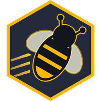

Beenetic StudiosAnswers to the most common questions, and how to reach us when they are not enough.
Email support@beeneticstudios.com. Tell us which game, what you were doing, and what happened. If the game is running, sending a problem report (below) gives us the details we need to help. We usually reply within a few days.
vs Computer, puzzles, and lessons work without a connection. Online games need one.
Still stuck? Send a problem report (next question) so we can see what went wrong.
In the game, tap your avatar, then Settings. Under Support, tap Report a Problem, and add a line about what happened.
The report helps us find the cause. It holds technical details about the game and your device, your player ID, and the game's recent log, which can include your display name and the names of players you have played.
If an ad was inappropriate, tap your avatar, then Settings. Under Support, tap Report an Ad, and tell us what was wrong with the ad and what it was for. It sends the same kind of report as Report a Problem, with details of the last ad you were shown, so we can find that ad and block it.
Tap the other player's nameplate in a game, or their avatar beside the game in your list, to open their player card. Tap ⋯ in the card's corner, then choose Report Player or Block Player. You need to be online. Players you have blocked are listed in Settings, under Account, then Blocked Players.
When other players report a name or status that breaks the Terms of Use, we may replace the name with "Player" and a few characters, or clear the status. The removed text cannot be used again for 90 days.
You can choose a new name or status at any time: tap your avatar at the top of the screen, then your name. If you think we got it wrong, email us and tell us your Player ID (in Settings, then About Reversi Rivals).
In the game, tap your avatar, then Settings. Under Account, tap Delete Account. This is immediate and cannot be undone.
No longer have the phone? You can ask by email instead. Both routes are explained on the Delete Your Account page.
Sign in with Google Play Games. Tap your avatar at the top of the screen, then Google Play Games. Once you are signed in, your progress is linked to your Play Games profile.
On a new phone or after a reinstall, if the phone is signed in to the same Play Games profile, the game picks up your saved progress on its own. If you started playing before signing in, signing in asks whether to load your saved progress or keep what is on this phone.
Without Play Games, your progress belongs to that one install. Uninstalling the game or clearing its data starts a fresh account, and the old progress cannot be brought back.
Nothing is lost when sign-in fails: your progress on the phone is safe. Check that you are online, then try again from your avatar at the top of the screen, then Google Play Games.
The game never asks you to sign in. If your phone is signed in to Play Games when you open the game, it links automatically. Otherwise, you can sign in at any time: tap your avatar, then Google Play Games.
Sign in to Game Center. If your iPhone is already signed in, the game links your progress to it automatically. Otherwise, the game offers Game Center sign-in the first time you open it; if you skipped that, tap your avatar at the top of the screen, then Game Center.
On a new iPhone or after a reinstall, if the iPhone is signed in to the same Game Center account, the game picks up your saved progress on its own. If you started playing before signing in, signing in asks whether to load your saved progress or keep what is on this iPhone.
Without Game Center, your progress belongs to that iPhone. A backup of the iPhone (to iCloud or a computer) includes it, so restoring the backup, or setting up a new iPhone from the old one, brings your progress along. Uninstalling the game without a backup starts a fresh account.
Nothing is lost when sign-in fails: your progress on the iPhone is safe. Check that you are online, then try again from your avatar at the top of the screen, then Game Center.
If nothing appears when you tap it, your iPhone has stopped offering the Game Center sign-in for the game, which it does after the sign-in is cancelled a few times. Sign in to Game Center in the Settings app, then try again.